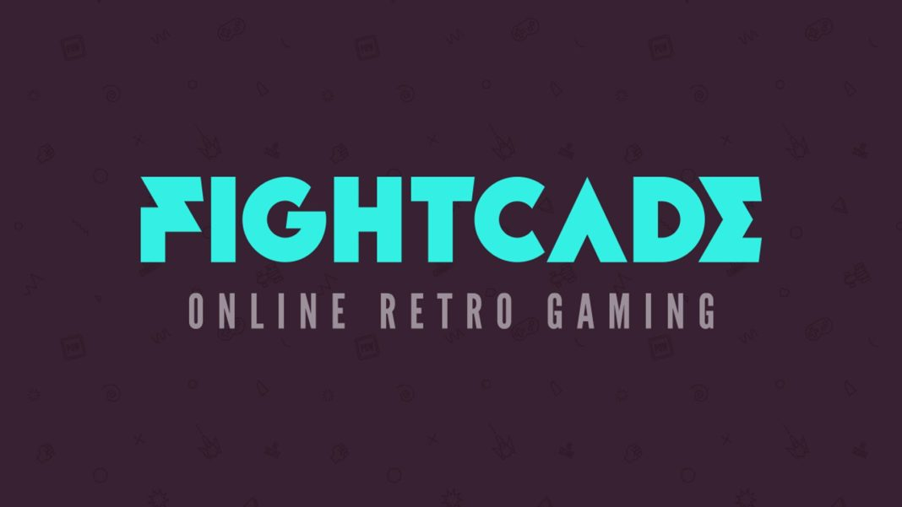
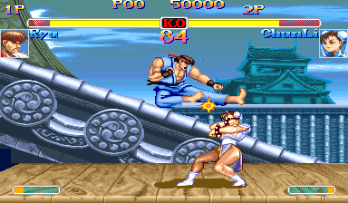

Plataformas recomendadas
Fightcade

Fightcade es una plataforma para jugar videojuegos retro online contra otras personas. Está muy enfocada en juegos arcade, especialmente juegos de pelea como Street Fighter, The King of Fighters, Marvel vs Capcom, Metal Slug y muchos más.
Nació como una alternativa moderna al antiguo sistema GGPO, una tecnología creada para mejorar el juego online en títulos de pelea usando rollback netcode. Fightcade tomó esa idea y la convirtió en una plataforma más accesible, con salas, chat, rankings, partidas online y soporte para muchos sistemas retro.
Requerimientos básicos
Fightcade está disponible para Windows, macOS y Linux. No necesita un ordenador muy potente, porque la mayoría de juegos son retro, pero sí conviene tener:

- Un PC o Mac relativamente moderno
- Windows, macOS o Linux
- Buena conexión a internet
- Mando o arcade stick recomendado
- Archivos ROM compatibles

Fightcade no incluye los juegos por defecto. Para que los juegos funcionen, es necesario tener los archivos correctos. En muchas instalaciones se usan archivos JSON creados por la comunidad, que permiten automatizar la descarga y ubicación de los archivos necesarios. Si estos JSON no están instalados correctamente, Fightcade puede abrir la sala del juego, pero el juego no cargará.
Puedes visitar la página oficial de Fightcade desde aquí: Fightcade Official Website